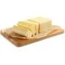
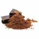

Receita de bolo de cenoura

ingredientes (8 porções)
- 1/2 xícara (chá) de óleo
- 4 ovos
- 2 e 1/2 xícaras (chá) de farinha de trigo
- 3 cenouras médias raladas
- 2 xícaras (chá) de açúcar
- f1 colher (sopa) de fermento em pó


Cobertura
- 1 colher (sopa) de manteiga 
- 1 xícara (chá) de açúcar
- 3 colheres (sopa) de chocolate em pó 
- xícara (chá) de leite

Utensílios
- Batedeira
- forma de bolo
- Liquidificador
- prato de sobremessa
Modo de preparo
- 1. Em um liquidificador, adicione a cenoura, os ovos e o óleo, depois misture.
- 2. Acrescente o açúcar e bata novamente por 5 minutos.
- 3. Em uma tigela ou na batedeira, adicione a farinha de trigo e depois misture novamente.
- 4. Acrescente o fermento e misture lentamente com uma colher.
- 5. sse em um forno preaquecido a 180° C por aproximadamente 40 minutos.
- 6. Despeje em uma tigela a manteiga, o chocolate em pó, o açúcar e o leite, depois misture.
- 7. Leve a mistura ao fogo e continue misturando até obter uma consistência cremosa, depois despeje a calda por cima do bolo.